初期設定
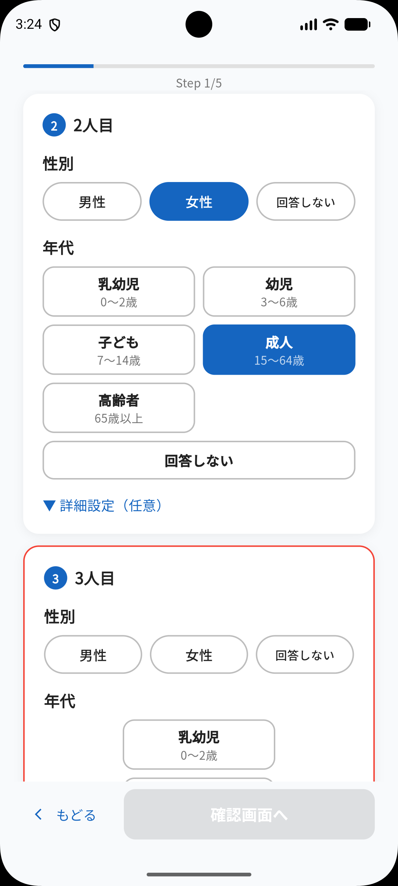
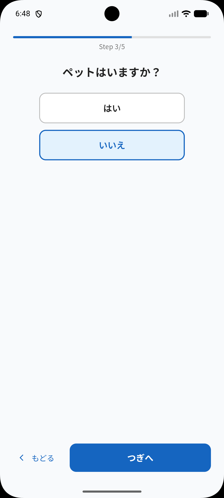
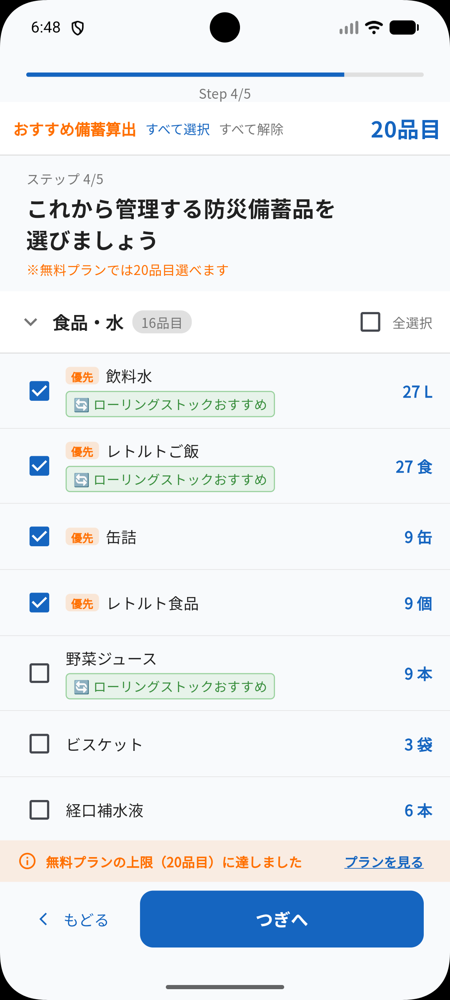
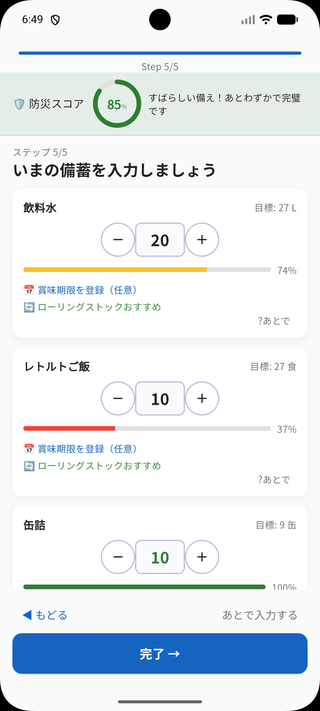
← 横にスワイプで続きを確認
初期設定について
アプリを初めて起動すると、家族構成・居住地・備蓄日数などを設定する画面が表示されます。この情報をもとに、あなたの家庭に最適な備蓄目標量が自動で計算されます。
- 世帯人数・年齢・ペットの有無を入力します
- 居住地（都道府県・市区町村）を選択します
- 備蓄したい日数を選択します（3日・7日など）
- 品目ごとの目標数量が自動で算出されます
ホーム画面
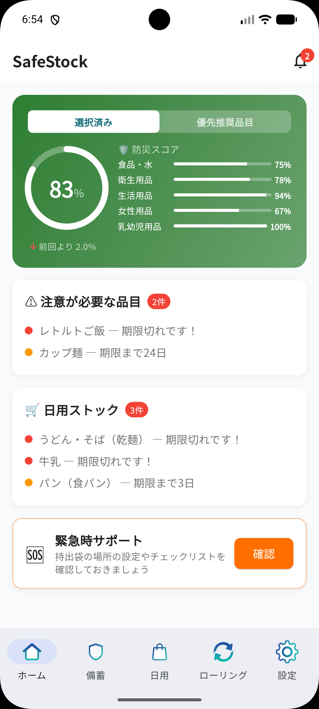
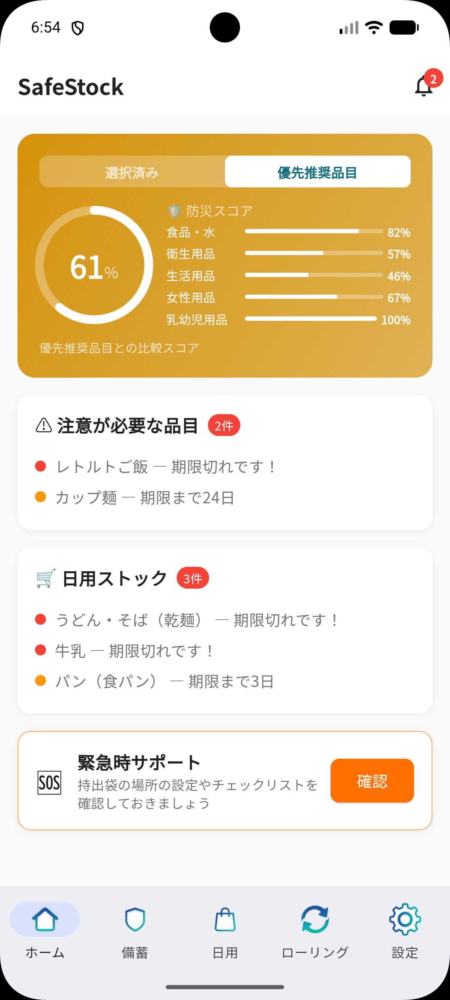
← 横にスワイプで続きを確認
ホーム画面の見方
アプリを開くと最初に表示されるダッシュボードです。今の備蓄状況を大まかに把握できます。防災スコアとカテゴリ別の充足率が一目でわかります。
- 防災スコア：備蓄の充実度を0〜100で表示。カテゴリ別の内訳も確認できます
- 注意が必要な品目：期限切れ・期限間近の防災備蓄品。タップすると備蓄リストに移動します
- 日用ストック：在庫が少ない・期限切れの日用品のお知らせ。タップすると備蓄リストに移動します
- 緊急時サポート：「確認」ボタンから持ち出し袋の設定やチェックリストに移動できます
防災備蓄
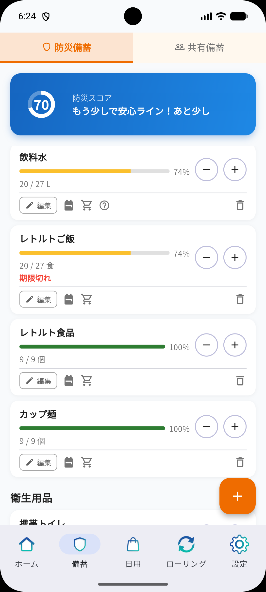
防災備蓄の管理
初期設定で選んだ備蓄品目を管理する画面です。上部に現在の防災スコアが表示され、カテゴリ別の充足率も確認できます。「＋」「−」ボタンで在庫数を増減でき、各カードのバーが長いほど目標数量を満たしている状態です。
- 編集（✏️）：賞味期限・メモ・購入時の検索ワードなどを登録できます
- カートアイコン：Amazon・楽天市場・ヤフーショッピングをそのまま開けます。編集画面で検索ワードを設定しておくとそのワードで検索した状態で起動します
- 🎒 バッグアイコン：緊急持ち出し袋への登録・数量指定ができます
- 右下の＋ボタン：定番品目以外を自由に追加できます
🎒 緊急持ち出し袋の管理
バッグアイコンをタップすると、その品目が緊急持ち出し袋に登録されます。防災備蓄・日用ストックどちらの品目でも登録できます。
- 持ち出す予定の品目と数量をまとめて一覧で確認できます
- 持出袋の保管場所や備考メモも登録できます
- ホーム画面の「緊急時サポート」→「持ち出し」タブから確認できます
日用ストック・買い物リスト
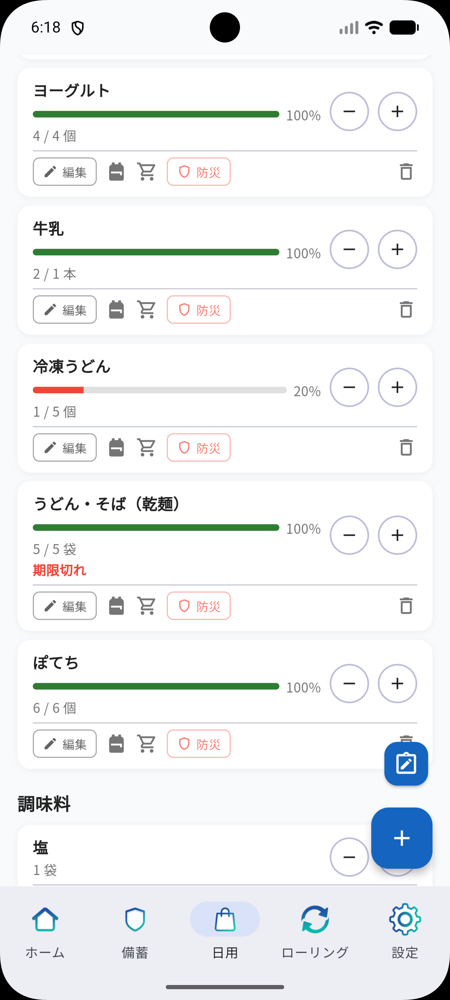
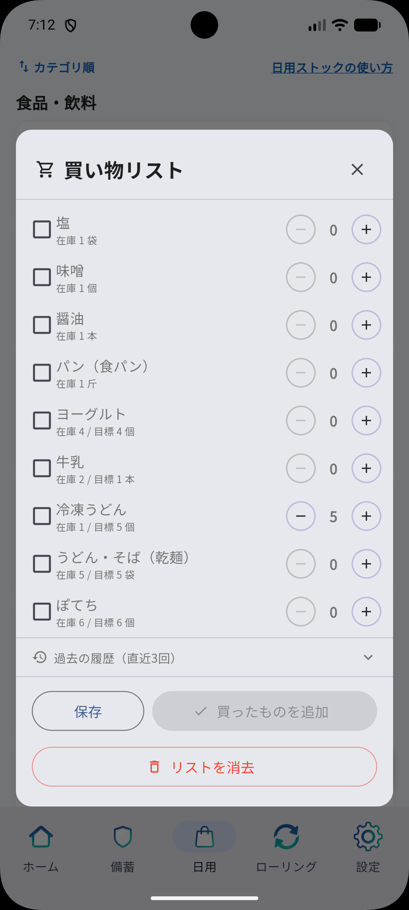
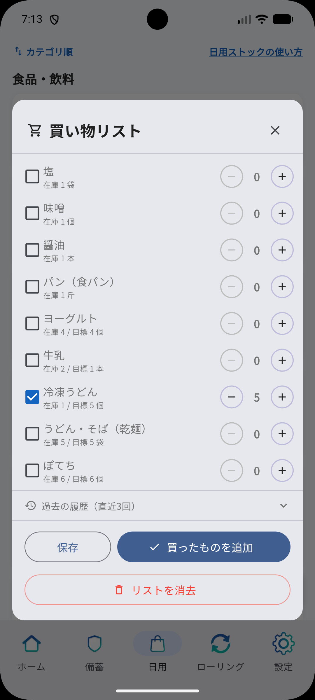
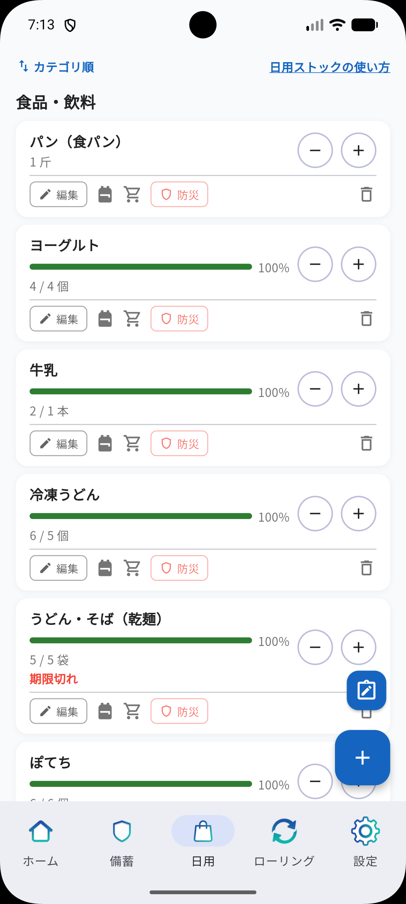
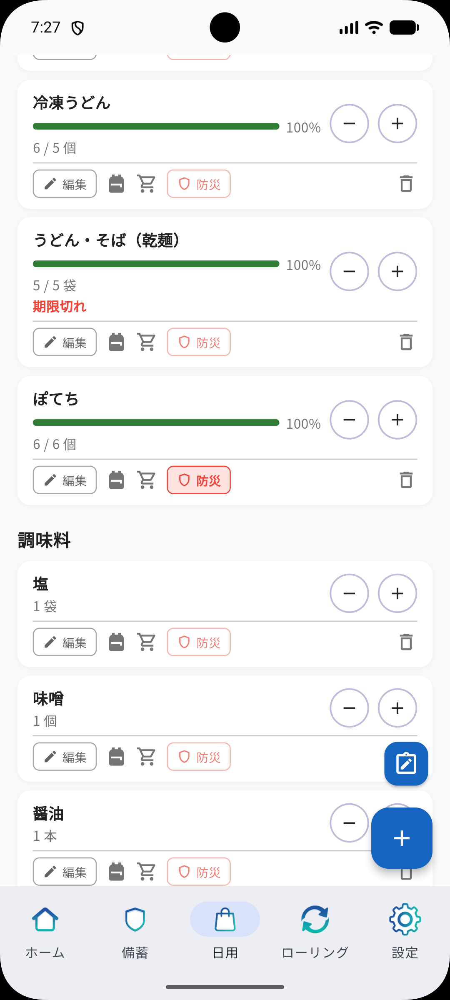
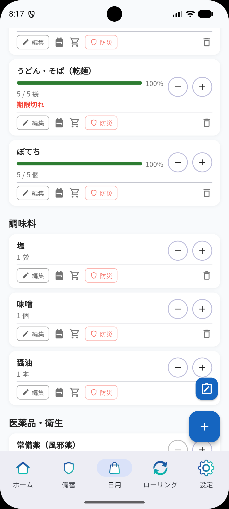
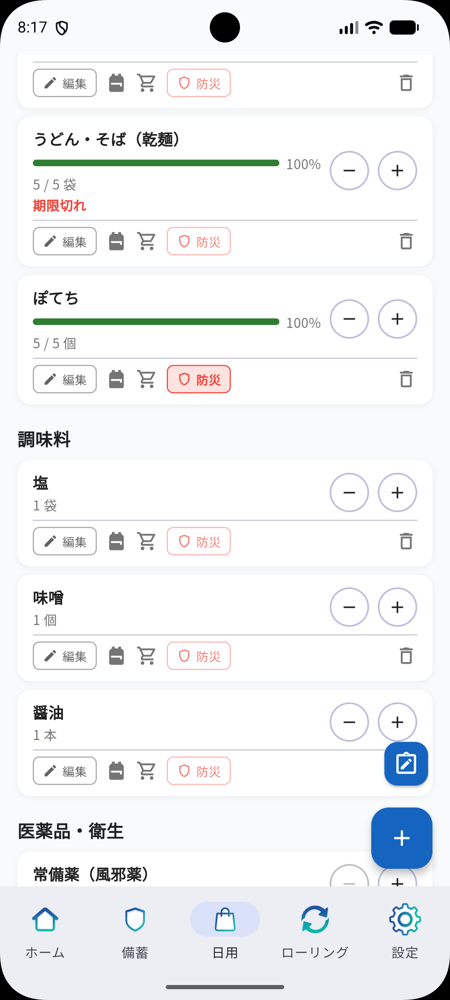
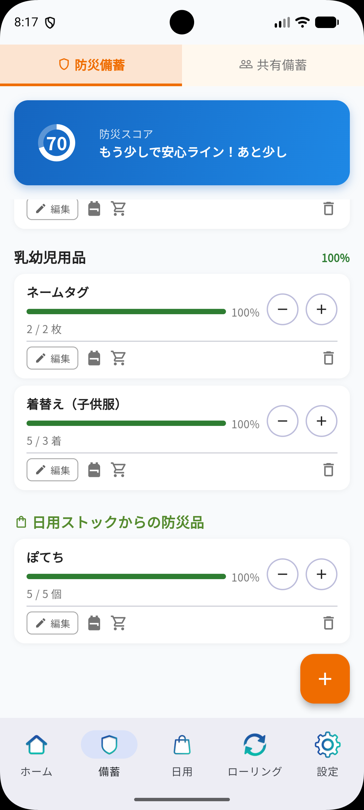
← 横にスワイプで続きを確認
日用ストック
マヨネーズ・シャンプーなど、日常的に使うものをストック管理できるタブです。右下の青い「＋」ボタンから、定番品目の追加と自由入力での追加ができます。
- 品名・カテゴリ・数量・単位を自由に設定できます
- 目標数を入力すると充足率バーが表示され、在庫の過不足がひと目でわかります
- 賞味期限・検索ワード・メモなども合わせて登録できます
- 防災タグ：オンにすると防災備蓄タブにも表示されます。普段使いの食料品を防災備蓄として兼用したいときに便利です
- 共有タグ：オンにすると共有備蓄タブに表示され、グループメンバーと在庫状況を共有できます
買い物リスト
日用ストックに登録した品目をそのまま買い物リストとして活用できます。日用ストックタブを開き、右下の「＋」ボタンのひとつ上にあるメモアイコンをタップして開きます。
- 日用ストックの品目・在庫数・目標数がそのまま表示されます
- 「＋」「−」で今回購入する数を調整できます
- 保存：アプリを閉じた後も再度開いて続きから使えます
- 買ったものを追加：チェックした品目の数量が日用ストックの在庫に自動で反映されます
緊急時サポート
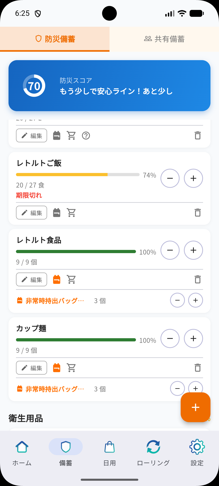
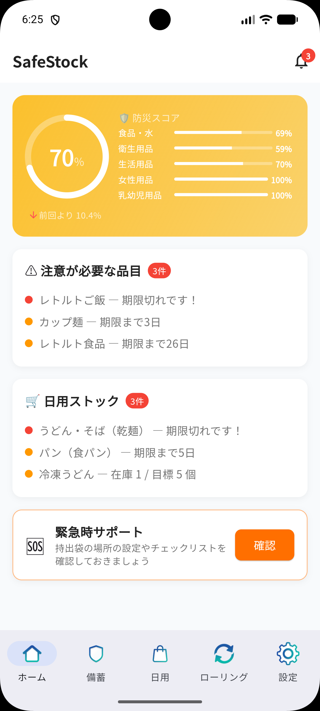
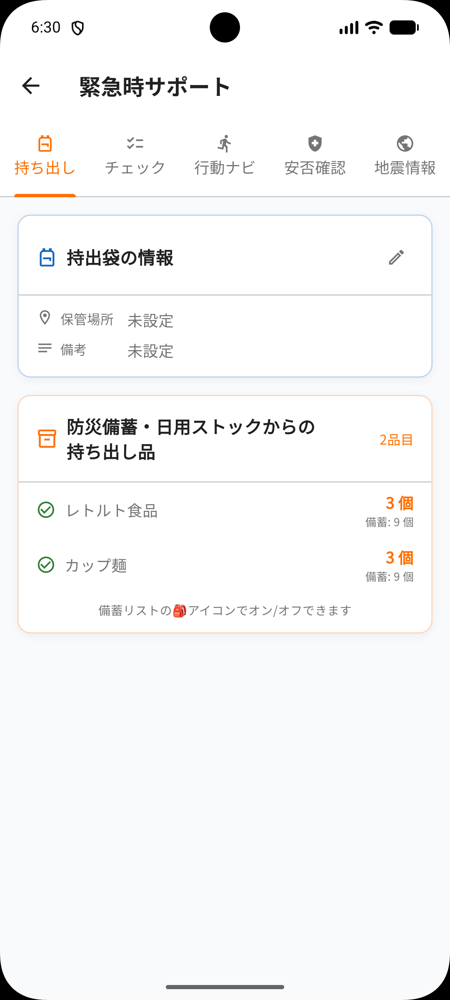
← 横にスワイプで続きを確認
5つの機能
いざというときに役立つ「持ち出し」「チェック」「行動ナビ」「安否確認」「地震情報」の各タブで構成されています。
チェックリストと行動ナビ
- チェックタブ：災害発生直後にやるべきことがカテゴリ別にまとめられています。「身の安全」「火の始末」「電気・水道」「避難準備」など、慌てずに確認できます
- 行動ナビタブ：地震・火災・水害・台風など、災害の種類ごとに取るべき行動をステップ形式で解説します
- チェックリストは全項目完了すると「確認完了」に変わります
- 行動ナビは平常時にも読んでおくことで、もしものときの心構えができます
安否確認
共有グループのメンバーと安否状況をリアルタイムで共有できます。「安全」「避難中」「要支援（SOS）」の3つから自分の状況を報告します。
- メンバー全員の状況が一覧で確認できます
- NTTの「災害用伝言ダイヤル（171）」への発信ボタンも搭載しています
ローリングストック
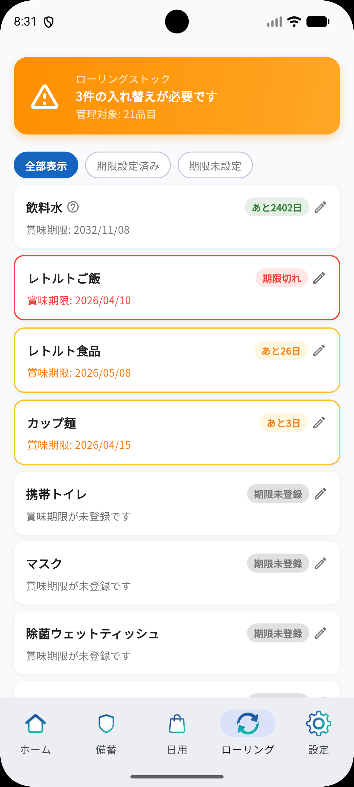
期限管理の見方
備蓄品の賞味期限を一覧で管理する画面です。期限が近い順に並び、何を先に使えばよいかひと目でわかります。
- 赤「期限切れ」：期限が過ぎた品目。早めに入れ替えましょう
- 「あと○日」：消費すべきタイミングを日数で表示します
- 「期限未設定」：まだ賞味期限が登録されていない品目
- 各行の鉛筆アイコンから賞味期限をすばやく更新できます
- 上部のタブで「全表示」「期限設定済み」「期限未設定」に絞り込めます